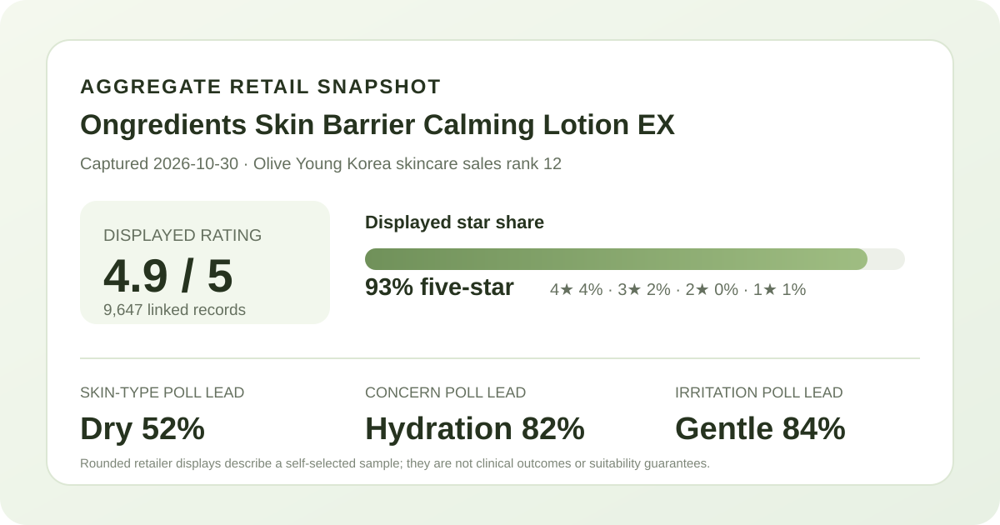
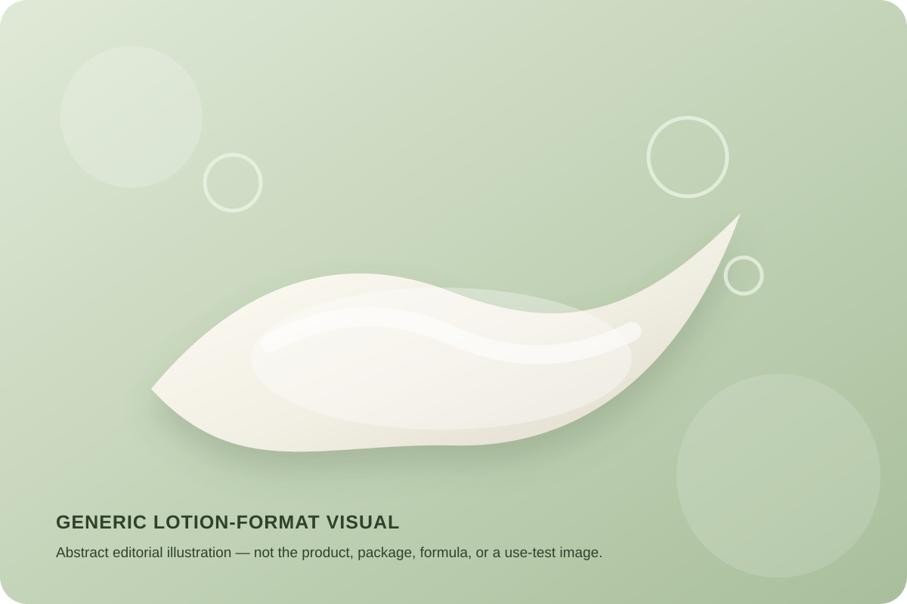

Data captured October 30, 2026. This analysis uses the retailer's displayed aggregate rating, star distribution, shopper polls, and anonymous automated summary. It does not copy or translate individual review text, names, or photos.

The short version: Ongredients Skin Barrier Calming Lotion EX appeared at number 12 in the captured skincare sales ranking. Its product header and detailed review view agreed on 4.9 out of 5 from 9,647 records. Dry skin, hydration concern, and the gentle response led the three displayed polls.
The displayed average was 4.9 stars. The product header showed 9,647 review records, and opening the detailed review view repeated both the 4.9 score and the 9,647-record total. That cross-surface agreement reduces the risk of attaching a review panel to the wrong product, which is a basic but important candidate check.
The detailed panel displayed these rounded star shares:
The shares total 100% as displayed. Five-star selections dominate, but a 93% five-star share should not be translated into a 93% success rate. The interface does not establish that every record reflects the same package, price, routine, application amount, climate, or length of use. It also does not show that all reviewers answered every optional poll.
The safer conclusion is that the listing carried a large, strongly positive retail record at the capture date. That makes the score more stable than a launch page with only a handful of reviews, but it still cannot isolate what caused a rating or predict what a new user will experience.
The skin-type poll displayed 52% dry, 42% combination, and 6% oily. Dry skin was the largest response group, with combination skin close behind. This mix suggests that the captured respondent pool was not narrowly limited to one skin-type label.
Representation is not performance. A 52% dry response does not prove that the lotion provides enough richness, reduces water loss, or works better for dry skin. The 6% oily share also does not establish incompatibility with oily skin. These percentages describe labels selected by respondents, while the interface does not expose a stable denominator or controlled comparison for each subgroup.
The concern poll showed 82% hydration, 17% soothing, and 2% wrinkle or brightening concern. The rounded shares total 101%, a normal consequence of whole-number display. Hydration clearly led this poll, which is consistent with how shoppers may approach a lotion format and the product's marketing position.
That alignment is descriptive rather than clinical. The poll does not measure water content, transepidermal water loss, barrier recovery, redness, or any other biological endpoint. No comparator, controlled treatment period, instrument reading, or blinded assessment appeared in the captured aggregate view. “Skin barrier” and “calming” remain product-name language here, not independently verified outcomes.
The irritation poll displayed 84% gentle, 15% ordinary, and 1% felt irritation. The gentle response was the clear majority, but the 1% lower-tail signal should not be erased. Even a strongly favorable poll does not guarantee comfort for an individual.
The page does not show that respondents followed the same directions or used the same surrounding products. Personal sensitivity, application frequency, damaged skin, climate, and concurrent actives can all change an experience. The responsible use of this poll is comparative context, not a safety claim. Check the current regional ingredient list and directions, and stop if discomfort develops.
The retailer's anonymous automated summary labeled 89% of the recent summary subset as positive. Its broad themes centered on makeup preparation, moisture or glow impressions, and mild-feeling or soothing use. Those themes can help explain what recent reviewers commonly discussed without reproducing any individual account.
They remain machine-generated groupings of self-selected retail feedback. The summary does not disclose a complete sampling frame, preserve the full context of every opinion, or establish whether a claimed change was measured. “Makeup preparation” can cover many different routines and base products; “glow” can refer to moisture, surface finish, lighting, or preference. I therefore use the themes only as discussion signals, not as proof that the lotion improves makeup adherence, repairs a barrier, or prevents irritation.

The retailer classifies this product as a lotion. In general skincare language, lotion usually refers to a leave-on emulsion used after lighter water-based steps and before or instead of a heavier cream. That category description does not determine this specific product's viscosity, oil phase, absorption speed, scent, tack, residue, or compatibility with sunscreen and makeup.
I did not handle or apply the product. The illustration above is intentionally generic and should not be read as a reconstruction of its color, slip, finish, or formula. The set title described a 220 ml lotion with an additional 80 ml unit. Pack details, gifts, and regional configurations can change, so confirm the current listing before comparing value.
At capture, the Korean page displayed a ₩39,900 reference price and a ₩33,900 sale price, with a displayed unit price of ₩11,300 per 100 ml for the promoted 300 ml total. These are dated retail terms, not a permanent market price. Coupons, gifts, membership benefits, delivery eligibility, inventory, and package composition may change independently.
Review records can also span earlier offers or configurations. The 9,647-record total does not prove that every reviewer received the same bonus unit or paid the same amount. For a current purchase comparison, verify the seller, total included volume, regional label, return terms, and checkout total rather than relying on this snapshot alone.
Ongredients Skin Barrier Calming Lotion EX was the first valid unpublished product after 11 higher-ranked listings matched already-covered product families or configurations. The listing held skincare sales rank 12, and the ranking and product titles agreed. The product header and detailed review view both displayed 4.9 stars from 9,647 records, with a 93% five-star share.
The poll pattern was coherent: dry skin was the largest skin-type group at 52%, hydration led the concern labels at 82%, and gentle led the irritation responses at 84%. The automated recent-summary subset was 89% positive and grouped discussion around makeup preparation, moisture or glow impressions, and mild-feeling use.
Those are useful shopping-context signals, not proof of barrier repair, hydration duration, calming action, or compatibility with every routine. The strongest buying approach is to treat the aggregate as a dated popularity and discussion snapshot, then verify the current formula, directions, pack size, and return terms against your own preferences and tolerance.
Method note: Numbers are transcribed from Olive Young Korea's live aggregate display on the capture date. Percentages are reported as displayed and are not converted into estimated respondent counts. Individual review text, reviewer names, product photographs, and reviewer photographs were not copied, translated, paraphrased, or reproduced. This is editorial analysis, not medical advice or a claim of firsthand use.
Source: Olive Young Korea product page (captured October 30, 2026). Store links contain no affiliate ID.
← All reviews · Review-volume rankings · Skin-type poll index · Methodology